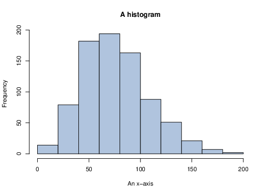

Beamer Slides
Beamer Slides
Sample Slides
Series Results
Expectation
Discrete Random Variables
Continuous Random Variables
Families of Discrete Random Variables I
Bernoulli random variables, \(X \sim Bern(p)\)
\[ E[X] = p \qquad Var(X) = p(1-p). \]Binomial random variables, \(X \sim Bin(n,p)\)
\[ E[X] = np \qquad Var(X) = np(1-p). \]Poisson random variables, \(X \sim Po(\lambda ), \ \lambda {\gt}0\)
\[ E[X] = \lambda \qquad Var(X) = \lambda . \]Families of Discrete Random Variables II
Geometric random variables, \(X \sim Geom(p)\)
\[ E[X] = \frac{1}{p} \qquad Var(X) = \frac{1-p}{p^2}. \]Negative Binomial random variables, \(X \sim NBin(r,p)\)
\[ E[X] = \frac{r}{p} \qquad Var(X) = \frac{r(1-p)}{p^2}. \]Discrete Uniform random variables, \(X \sim U(1,2,\ldots ,n)\)
\[ E[X] = (n+1)/2 \qquad Var(X) = (n^2-1)/12. \]Families of Continuous Random Variables I
Uniform random variables, \(X \sim U(a,b)\),
\[ E[X]=\frac{a+b}{2} \qquad Var(X) = \frac{(b-a)^2}{12}. \]Exponential random variables, \(X \sim Exp(\lambda )\),
\[ E[X]= \frac{1}{\lambda } \qquad Var(X) = \frac{1}{\lambda ^2}. \]Normal random variables, \(X \sim N(\mu ,\sigma ^2)\),
\[ f_X(x) = \frac{1}{\sqrt{2\pi \sigma ^2}} e^{-\frac{(x-\mu )^2}{2\sigma ^2}}, \ -\infty {\lt} x {\lt} \infty , \ -\infty {\lt} \mu {\lt} \infty , \ \sigma {\gt}0. \] \[ E[X]= \mu \qquad Var(X) = \sigma ^2. \]Families of Continuous Random Variables II
Gamma random variables, \(X \sim Ga(n,\lambda )\),
\[ f_X(x) = \frac{\lambda ^{n}}{\Gamma (n)} x^{n-1} e^{-\lambda x}, \qquad x{\gt}0, \ n{\gt}0,\ \lambda {\gt}0, \ \Gamma (n)=(n-1)! \] \[ E[X] = \frac{n}{\lambda } \qquad Var(X) = \frac{n}{\lambda ^2}. \]Beta random variables, \(X \sim Beta(a,b)\),
\[ E[X]=\frac{a}{a+b} \qquad Var(X) = \frac{ab}{(a+b)^2(a+b+1)}. \]Column example
Here is some text in a left hand column.
